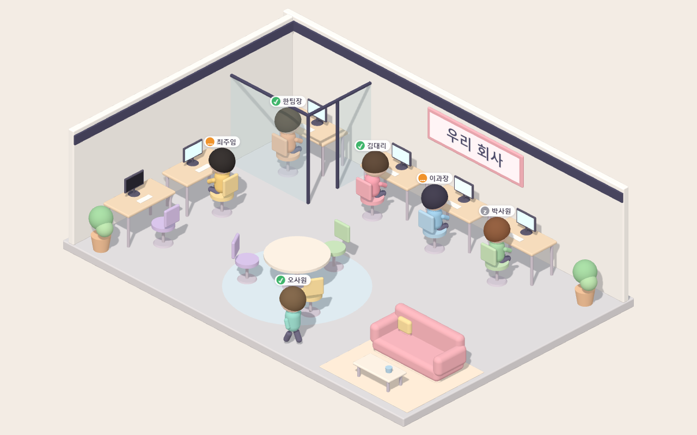

아래 글을 복사해서 AI에게 붙여 넣으면 파일 하나가 나와요. 그 파일을 브라우저로 열면 사무실이 보여요.

이 그림은 2026년 11월 15일, 새 대화에서 아래 글 하나만 주고 Claude Code가 만든 결과를 그대로 찍은 거예요. 영상에 나온 우리 사무실은 여기서 가구와 층을 더 붙인 거고요.
three.js 로 파일 하나(index.html)짜리 3D 미니 사무실을 만들어 줘. 설치 없이 브라우저에서 파일을 열면 바로 보여야 해. 보는 방식 - 원근 없는 카메라(OrthographicCamera)로 비스듬히 위에서 내려다보는 시점. 카메라는 고정. - 인형의 집처럼 앞쪽 벽 두 면을 떼고 뒤쪽 벽 두 면과 바닥만 보이게. - 창 크기가 바뀌어도 방 전체가 화면에 들어오게. 방 안 - 가로 9, 세로 6 정도 되는 방. 바닥은 밝은 회색, 벽은 흰색, 벽 위쪽에 진한 색 띠 한 줄. - 책상 묶음 둘: 뒷벽 앞에 책상 3개가 나란히, 왼쪽 벽 앞에 책상 2개. 책상마다 모니터와 의자. - 뒤 왼쪽 구석에 유리벽으로 막은 작은 방 하나와 책상 하나. - 가운데에 둥근 회의 탁자와 의자 3개, 오른쪽 앞에 소파와 낮은 탁자, 구석에 화분. - 뒷벽에 회사 이름 간판(캔버스에 글자를 그려서 붙이기). - 가구는 전부 상자·원통·공으로 직접 만들고 바깥 모델 파일은 쓰지 마. 모서리는 둥글게, 색은 파스텔로 아기자기하게. - 부드러운 그림자를 켜고, 모니터 화면은 은은하게 빛나면서 조금씩 깜박이게. 직원 - 파일 맨 위에 직원 목록을 배열로 둬: 이름, 상태(ok, work, wait, off), 자리 번호. 내가 이 배열만 고치면 화면이 바뀌어야 해. - 직원은 머리가 큰 작은 사람 모양. 책상 직원은 의자에 앉아 있고 고개를 가끔 까딱여. - 상태가 off 면 그 직원은 안 보이고 그 자리 모니터도 꺼져. - 직원 한 명은 '걷는 직원'으로 정해서, 상태가 ok 나 work 일 때는 가구를 피해 통로를 따라 방을 한 바퀴씩 걷고, wait 일 때는 소파에 앉아 있게. - 머리 위에 이름표와 상태 표시를 HTML 로 얹어 줘(3D 글자 말고). ok 는 초록 ✓, work 는 주황 …, wait 는 회색 z. 걷는 직원의 이름표는 따라다녀야 해. 지킬 것 - three.js 는 CDN 에서 버전을 정해서 불러와(import map 사용). - 다 만든 뒤에 파일을 직접 열어 보고, 글자가 겹치거나 사람이 가구를 뚫고 지나가면 고쳐 줘. - 회사 이름은 "우리 회사"로 넣어 두고, 바꾸는 곳을 주석으로 알려 줘.
우리는 Claude Code에서 돌렸어요. 5분쯤 걸려서 index.html 파일 하나가 나왔어요.
코드를 써 주는 다른 AI에 넣어도 되는데, 그건 우리가 돌려 보지 않았어요.
영상 속 책상·소파·사람은 Kenney가 저작권 없이(CC0) 풀어 둔 묶음이에요. 받아서 "이 모델로 가구를 바꿔 줘"라고 하면 돼요.
kenney.nl/assets/furniture-kit (가구 140개)
kenney.nl/assets/mini-characters-1 (사람, 걷는 동작 포함)
AI가 만드는 결과는 돌릴 때마다 조금씩 달라요. 위 그림과 똑같이 나오지는 않아요.
Kenney와 우리는 제휴가 없어요.